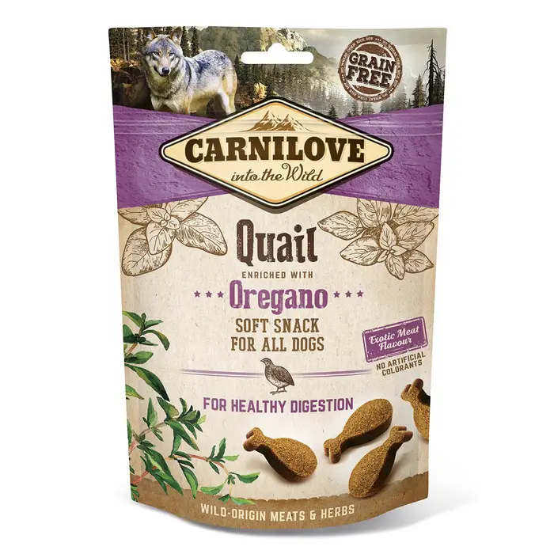

Ласощі для собак Carnilove Quail with Oregano
Напівм'які ласощі для собак всіх порід, з перепелом та орегано для здорового травлення.
Онлайн зоомагазин
Напівм'які ласощі для собак всіх порід, з перепелом та орегано для здорового травлення.
Повнораціонний сухий корм для стерилізованих кішок і кастрованих котів - індичка і овес.
Тепла і зручна модель з трикотажу «ангора» буде до вподоби найпримхливішим котикам. Високий комір та пухнаста підкладка подарують тепло і комфорт. Взимку чи в міжсезоння котикам стане у пригоді светр CAT. Модель з теплого еластичного трикотажу швидко вдягається, чудово зігріває.
стимулює мисливський інстинкт кота
для дрібних котів і кошенят • нейлон • плавно регулюються • зі зручними пластиковими застібками і металевим карабіном
Ласощі з сиром у вигляді забавних роликів містить вітаміни груп А, D, Е, дуже корисні для Вашого вихованця. Крім того, улюбленець, безумовно, отримає задоволення під час гри з роликами.
Паста GimCat Multi-Vitamin Paste містить унікальний комплекс 3-в-1, що включає 12 життєво важливих вітамінів, бета-глюкан і біологічно цінні масла, які надають комплексний зміцнювальний вплив на імунну систему і активізують захисні функції організму.
Інгредієнти: риба (тунець 58%), куряче м'ясо (26%), тапіоковий крохмаль, гліцерин, горохове волокно, котяча м'ята (0,4%), хлорид натрію. Аналітичний склад: сирий білок 40,0%, сирий жир 5,0%, сира зола 3,5%, сира клітковина 0,5%, вологість 20,0%.